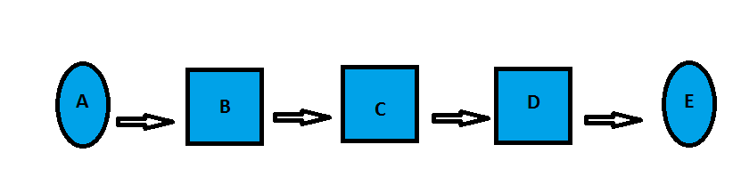

ACTIVIDADES 2-3
PROGRAMACIÓN-PRUEBA-DOCUMENTACIÓN-MANTENIMIENTO

PROGRAMACIÓN-PRUEBA-DOCUMENTACIÓN-MANTENIMIENTO
1. Mencione dos objetivos de la programación. 2. ¿Cuáles son las fases de la creación de un programa? 3. ¿Qué es lenguaje de programación? 4. Mencione ayudas para la programación. 5. Relacione las etapas de la compilación con la gráfica.  + Parsing ( ) + Programa Fuente ( ) + Generación del código ( ) + Programa Objeto ( ) + Análisis léxico ( ) 6. Análisis lexicográfico: Cosiste en descomponer el programa fuente en sus elementos constituyentes o símbolos: palabras reservadas, símbolos de operadores, identificadores constantes, comentarios, blancos, etc. De acuerdo a esta definición, mencione los símbolos constitutivos de la siguiente sentencia: A=(C+D)*17 Operadores: Variables: Constantes: 7. Defina algoritmo y cuáles son sus características 8. Un cliente ejecuta un pedido a una fábrica. La fábrica examina en su base de datosla ficha del cliente; si el cliente es solvente entonces la empresa acepta el pedido; en caso contrario, rechazará el pedido. Realicé el algoritmo correspondiente: 1. 2. 3. 4. 5.
1. Que documentación se requiere para cada etapa del proyecto de software
2. ¿Por qué las pruebas de Calidad de software son importantes?
3. Mencione y describa las clases de mantenimiento que existen.
4. Describa las características, ventajas y desventajas de cada modelo señalado: